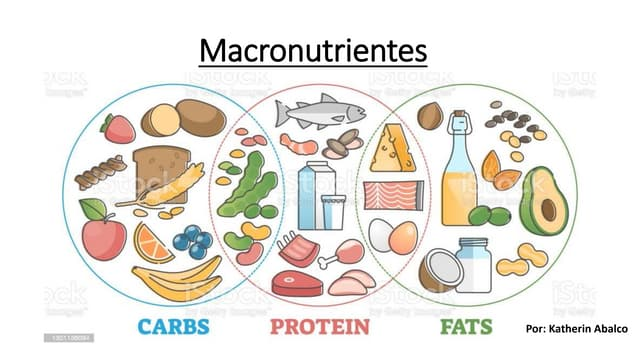
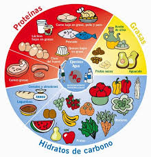
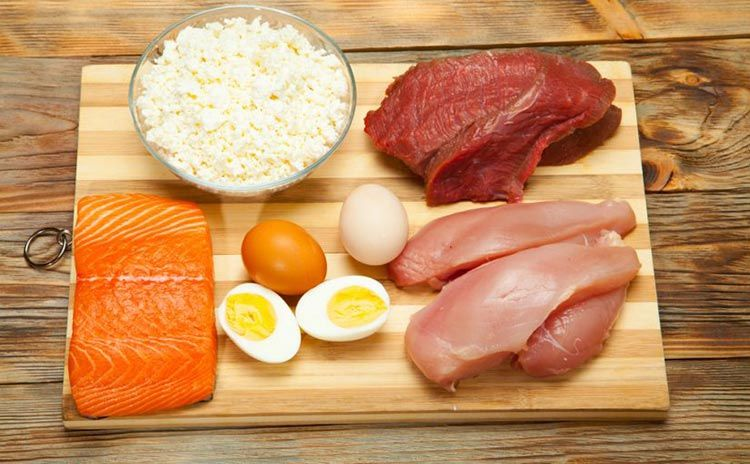
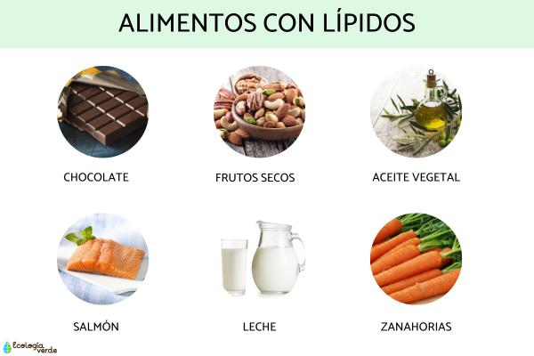
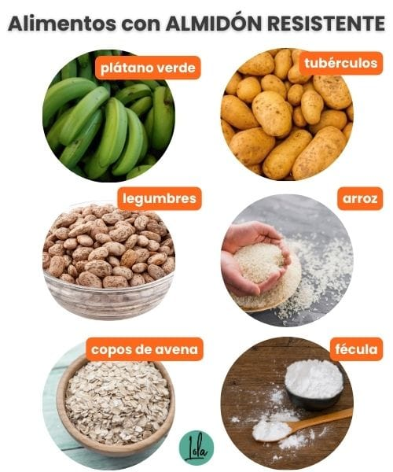
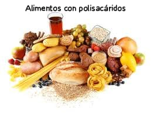

Los macronutrientes fundamentales presentes en los alimentos son:
Carbohidratos: proporcionan energía.
Proteínas: esenciales para el crecimiento y la reparación de tejidos.
Grasas: ofrecen energía y ayudan en la absorción de vitaminas.
Estos nutrientes son necesarios en grandes cantidades para mantener la salud y el funcionamiento del cuerpo.

Carbohidratos
Características: Principal fuente de energía. Se dividen en simples (azúcares) y complejos (almidones y fibras).
Impacto positivo: Proporcionan energía rápida y las fibras ayudan en la digestión. Ejemplos: frutas (azúcares naturales), granos enteros (fibras).
Impacto negativo: El exceso de azúcares refinados puede causar aumento de peso y diabetes tipo 2. Ejemplos: refrescos, dulces.
Estructura Química
Los carbohidratos están formados por carbono (C), hidrógeno (H) y oxígeno (O). Su fórmula general es (Cn(H2O)n). Se dividen en:
Monosacáridos: Ejemplo: Glucosa (C6H12O6).
Disacáridos: Ejemplo: Sacarosa (C12H22O11).
Polisacáridos: Ejemplo: Almidón.

Grasas
Características: Fuente concentrada de energía, ayudan en la absorción de vitaminas liposolubles. Se dividen en saturadas, insaturadas y trans.
Impacto positivo: Las grasas insaturadas mejoran la salud cardiovascular. Ejemplos: aceite de oliva, aguacates.
Impacto negativo: Las grasas saturadas y trans pueden contribuir a enfermedades cardiovasculares y obesidad. Ejemplos: carnes rojas (saturadas), alimentos procesados (trans).
Estructura Química
Los lípidos están formados principalmente por átomos de carbono, hidrógeno y oxígeno. Los triglicéridos son el tipo más común de grasa:
Triglicéridos: Compuestos por una molécula de glicerol y tres ácidos grasos.
Ejemplo de ácido graso: Ácido palmítico (C16H32O2).
Proteínas
Características: Esenciales para el crecimiento, reparación de tejidos y producción de enzimas y hormonas.
Impacto positivo: Ayudan en la construcción muscular y mantenimiento de tejidos. Ejemplos: pollo, legumbres.
Impacto negativo: El exceso puede afectar los riñones y la salud ósea a largo plazo. Ejemplos: dietas altas en carne sin equilibrio de otros nutrientes.
Estructura Química
Las proteínas están formadas por aminoácidos, que contienen carbono, hidrógeno, oxígeno y nitrógeno. Cada aminoácido tiene un grupo amino (-NH2) y un grupo carboxilo (-COOH), y una cadena lateral variable:
Estructura general de un aminoácido: (R-CH(NH2)-COOH), donde R representa la cadena lateral específica del aminoácido.
Ejemplo: Alanina (CH3-CH(NH2)-COOH).

Identificación de Macronutrientes
Determinación de Grasas (o Lípidos)
Materiales:
Alimentos de origen animal y vegetal (carne molida, queso, nueces, crema de maní, palta, manzana, aceite comestible, leche, etc.)
Papel estraza
Agua destilada y etanol
Linterna
Material de laboratorio: tubos de ensayo, gradilla, pinzas para tubos de ensayo, pipeta y perilla, vaso de precipitado (100 mL)

Procedimiento:
Corta los alimentos en pequeños trozos y colócalos sobre una hoja de papel estraza. Deja reposar unos minutos.
Observa si el papel muestra manchas traslúcidas, lo que indica la presencia de grasas.
En caso de observar dudas, usa una linterna detrás del papel para verificar la transparencia.
Adicionalmente, puedes mezclar los alimentos con etanol en un tubo de ensayo. Luego agrega agua destilada. Si se forma una capa blanca (emulsión), confirma la presencia de lípidos.
Determinación de Azúcares Reductores
Materiales:
Alimentos de origen animal y vegetal (leche, jugo de fruta, jugo de naranja, cebolla, papa, etc.)
Reactivo de Fehling (A y B)
Gradilla
Agua destilada
Pinzas para tubos de ensayo
Mechero de alcohol
Vaso de precipitado (100 mL)
Rejilla de asbesto
Procedimiento:
En un tubo de ensayo, mezcla el alimento (si es sólido, disuelve en agua) con reactivo de Fehling (A y B).
Coloca el tubo en un baño de agua caliente durante unos minutos.
Observa cualquier cambio de color. Un color rojo ladrillo indica la presencia de azúcares reductores.
Disuelve una muestra del alimento en agua destilada en un tubo de ensayo.
Agrega unas gotas de reactivo de Biuret.
Observa el cambio de color. Un color violeta indica la presencia de proteínas.
Determinación de Almidón
Materiales:
Alimentos de origen vegetal ricos en almidón (papa, plátano, arroz, etc.)
Reactivo de yodo
Placa de Petri
Agua destilada

Procedimiento:
Coloca una pequeña muestra del alimento en una placa de Petri.
Agrega unas gotas de reactivo de yodo.
Observa el cambio de color. Un color azul oscuro o negro indica la presencia de almidón.
Alimentos Polisacáridos
Características: Son carbohidratos complejos formados por la unión de múltiples monosacáridos. Ejemplos incluyen almidón y celulosa.
Impacto positivo: Proporcionan energía sostenida y son esenciales para la salud digestiva. Ejemplos: cereales integrales, legumbres, y tubérculos como la papa.
Impacto negativo: Su consumo en exceso, sin suficiente fibra, puede causar problemas digestivos. Ejemplos: alimentos procesados altos en almidón refinado.

Estructura Química
Los polisacáridos son polímeros de monosacáridos unidos por enlaces glucosídicos. Dependiendo de la estructura y tipo de enlaces, pueden ser ramificados o lineales.
Almidón: Principal reserva de energía en plantas, compuesto por amilosa y amilopectina.
Celulosa: Componente estructural en plantas, es una fibra dietética no digerible por humanos.
Glúcidos
Características: Son otra forma de referirse a los carbohidratos, incluyen azúcares simples y complejos.
Impacto positivo: Fuente rápida de energía y esencial para el metabolismo. Ejemplos: frutas, verduras, y granos enteros.
Impacto negativo: El consumo excesivo de azúcares simples puede llevar a problemas de salud como la obesidad. Ejemplos: azúcares refinados en dulces y bebidas azucaradas.
Estructura Química
Los glúcidos están formados por carbono, hidrógeno y oxígeno. Se clasifican en: